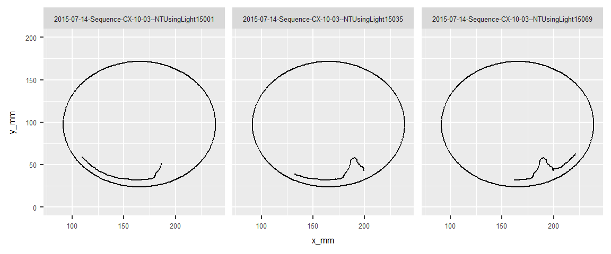

The goal of this project was to extract the common behavioural patterns of bees in an experiment which shared similarities to the morris water maze experiment. Cluster analysis has previously been applied successfully to the morris water maze experiment to provide insight into how rodents behave at a fine grain resolution. The goal of this project was to investigate whether similar techniques were generalizable to different experiments and species. In particular we wanted to analyse the behaviour of bees in an experiment adapted from the detour paradigm.
In this experiment bees were placed in a circular arena in which they could only move in the x and y directions, but not vertically. Lights were then switched off and on at different positions along the edge of the arena. The bee’s position was tracked for the duration of the experiment, producing a dataset of x, y coordinates at uniform time intervals. The experiments were conducted for 3 different treatment groups (1) no treatment (2) treated with saline (3) treated with saline.
One of the central challenges of this project was to extract features from the bees recorded x,y coordinates, representing the data in a format that would enable typical behaviours to be detected using cluster analysis. Features were selected that were likely to capture the geometric and positional characteristics of a segment.
This is the median Euclidean distance of a segment’s points from the centre of the arena scaled by the arena radius (Tiago V. Gehring 2015).
This is the difference between upper and lower quartile distances from the centre scaled by the arena radius (Tiago V. Gehring 2015).
The focus is specified as: \[f=1-\frac{4A}{\Pi d^2}\] Where A is minimum enclosing ellipsoid around the segment and d is the segment length (Tiago V. Gehring 2015).
The eccentricity is specified as:
E=1-b2/a2 \[E=1-\frac{b^2}{a^2}\] Where a and b is semi-major axis and the semi-minor axis of the enclosing ellipse (Tiago V. Gehring 2015).
The inner radius variation is specified as: \[ v = \frac{(c_{UQ}-c_{LQ})}{c_{MED}} \] Where \(c_{UQ}\), \(c_{LQ}\) and \(c_{MED}\) are the upper quartile, lower quartile and median for the distance from the centre of the minimum enclosing ellipse (Tiago V. Gehring 2015).
The central displacement is specified as the distance between the centre of the arena and the centre of the minimum enclosing ellipse (Tiago V. Gehring 2015).
The path efficiency is specified as: \[P=\frac{\sqrt{(x_n-x_1)^2+(y_n-y_1)^2}}{\sum^n_{i=1}\sqrt{(x_{i+1}-x_i)^2+(y_{i+1}-y_i)^2}}\] Where \(x_i\) and \(y_i\) are ith x and y coordinates of the segment respectively and n is the number of points in the segment. intuitively, it can be thought of as how directly the segment moves from one location to another (Illouz et al. 2016).
The sum of absolute angles is specified as: \[S=\sum\arccos\left(\frac{\langle{\bar{u}},\bar{v} \rangle}{||\bar{u}||.||\bar{v}||}\right)\] Where \(\bar{u}\) and \(\bar{v}\) are sequential vectors (Illouz et al. 2016).
The centre of the arena was taken to be the midpoint between the max and min x and y coordinates in the entire dataset of points.
The diameter of the arena was taken to be either the distance between the max and min Y coordinate or the max and min X coordinate, whichever was the greatest.
The minimum enclosing ellipse was computed using the Khachiyan Algorithm. Code from https://ecogenomics.github.io/GroopM/dev_docs/groopm.ellipsoid.EllipsoidTool-class.html was used with some modifications to work for 2d data.
A bee’s path is defined as he entire path from beginning to end for a single instance of the experiment (Figure 1).
Figure 1: The full path of a bee in a single experiment.
This was split up into segments of a uniform length where each consecutive segment overlapped the previous segment by 70% of its length. Figure 2 shows 3 overlapping segments while Figure 3 shows them separately.
Figure 2: Three overlapping segments from the full bee’s path.
 Figure 3: Three segments displayed separetely.
Since segments overlapped it was necessary to resolve the issue where overlapping segments belonged to different clusters. We used a majority voting approach similar to the one used in (Avgoustinos Vouros 2017), but without weights since we do not know the classes. K-means cluster analysis was performed to find the natural groupings of segments according to the above extracted features. For each point a vote was taken from each segment that overlapped that position and the point assigned to the cluster with the most votes. Points where two or more cluster groups tied, were considered unidentified.
Avgoustinos Vouros, Kinga Szydlowska, Tiago V. Gehring. 2017. “A Generalised Framework for Detailed Classification of Swimming Paths Inside the Morris Water Maze.” ArXiv E-Prints, November.
Illouz, Tomer, Ravit Madar, Yoram Louzon, Kathleen J. Griffioen, and Eitan Okun. 2016. “Unraveling Cognitive Traits Using the Morris Water Maze Unbiased Strategy Classification (Must-c) Algorithm.” Brain, Behavior, and Immunity 52: 132–44. doi:https://doi.org/10.1016/j.bbi.2015.10.013.
Tiago V. Gehring, Carmen Sandi & Eleni Vasilaki, Gediminas Luksys. 2015. “Detailed Classification of Swimming Paths in the Morris Water Maze: Multiple Strategies Within One Trial.” Scientific Reports 5: 14562.
This R Markdown site was created with workflowr